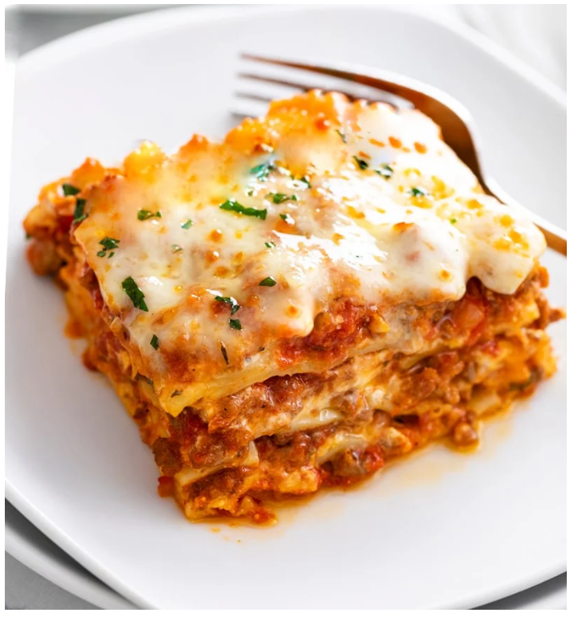

Lasagna
Go back to the main page

History of Lasagna
Lasagna originaited in Italy during Middle Ages. The oldest transcribed text about lasagna appears in 1282 in the Memoriali Bolognesi ("Bolognesi Memorials"), in which lasagna was mentioned in a poem transcribed by a Bolognese notary;[4][5] while the first recorded recipe was set down in the early 14th-century Liber de Coquina (The Book of Cookery).[6]
It bore only a slight resemblance to the later traditional form of lasagna, featuring a fermented dough flattened into thin sheets, boiled, sprinkled with cheese and spices, and then eaten with a small pointed stick.[7] Recipes written in the century following the Liber de Coquina recommended boiling the pasta in chicken broth and dressing it with cheese and chicken fat. In a recipe adapted for the Lenten fast, walnuts were recommended.
Ingredients
- Meat
- Onion and garlic
- Tomato products
- Sugar
- Spices and seasonings
- Lasagna noodles
- Cheeses
- Egg
How to Make Lasagna Step-By-Step
- Put pasta water on to boil
- Brown the ground beef
- Cook the bell pepper, onions, and garlic; add back the beef
- Make the sauce
- Boil and drain the lasagna noodles
- Preheat the oven to 375°F
- Assemble the lasagna
- Bake
- Cool and serve